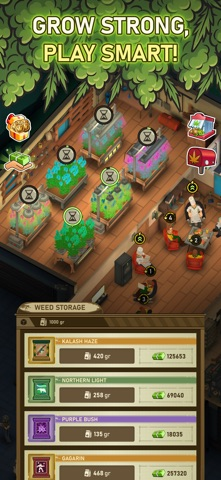
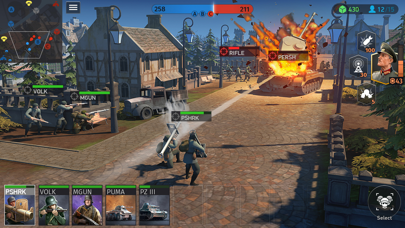
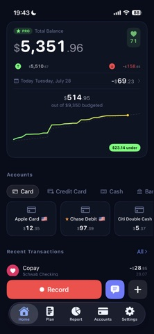
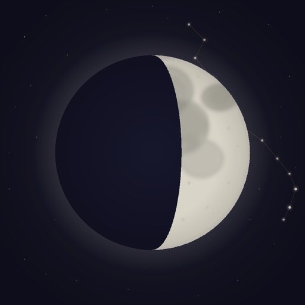
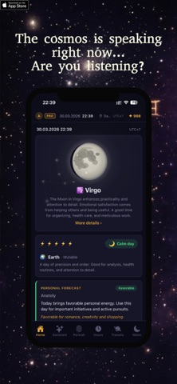

and −70% crashes in one month on Weed Empire — re-architected into streamed modules.
ANATOLY SHESHENIN / SENIOR UNITY DEVELOPER
Built to play.
Made to run.
I build gameplay systems and game AI, keep multiplayer worlds in sync, and make demanding games run better.
Hanoi, Vietnam UTC+7 · Remote, any time zone · Open to relocation
CREATOR PROFILE
KEY RESULTS
World War Armies, built from scratch on Photon Quantum while it was in beta.
that re-prioritize, get interrupted and resume their work without deadlocks.
4 Unity developers and 3 QA; promoted from developer to Team Lead.
fix bugs through the tracker; every build lists what it fixes and what is still open.
01 / SELECTED WORK
Games & interactive worlds
My contributions across commercial games,
VR, and hands-on simulation.
Weed Empire
Unity Developer → Team Lead
A business strategy game built around production, progression, and managing a growing operation.
My contribution
- 15 → 60 FPS, −70% crashes in about a month (Honor 70): rebuilt the game into independently loaded modules that scale down as the player progresses, fixed memory leaks and rewrote hot algorithms.
- GOAP + sensor AI for up to 100 employees: agents can be killed, arrested or hospitalized and resume exactly where they stopped; multi-role agents never deadlock.
- Team Lead of 4 Unity developers and 3 QA — hired every one of them, ran sprints and mentoring.
- AI in the studio: a GBrain knowledge base from Slack, chats and Confluence, an AI teammate in Slack, and release notes generated from commits.
- Ad monetization (ironSource → AppLovin MAX) — ads became a revenue source for the first time; quests, progression, pricing, offers and onboarding.
PRODUCTION. PROGRESSION. PERFORMANCE.

World War Armies
Unity Developer · 10M+ downloads
A multiplayer real-time strategy game with unit-based combat and tactical decision-making.
My contribution
- Started the game solo and grew it with the team to release.
- Moved all gameplay to Photon Quantum (deterministic rollback) while it was still in beta; scaled matches from 1v1 to 4 players.
- Built bot AI inside the Quantum simulation.
- Technical game design: unit stats, damage and range formulas, combat balance.
TACTICS, FROM SYSTEMS TO THE SCREEN.

VR platform
for education
Unity Developer · product role
Joined at the start and shaped the architecture, gamification and features of a VR platform — Varwin Education reached 100+ Russian schools by 2020. Solved multiplayer for objects that know nothing about each other with a fast reflection layer that networks user-authored logic; shared Photon sessions for up to eight users.
Explore VarwinInteractive
shooting simulator
Senior Lead Developer
Led the team and moved a legacy codebase to a modern architecture. Built animal AI for boar and moose hunts — animals hear a shot, panic and flee — and networked shooting for two shooters in different locations on one range, with synchronized targets and ballistics. Delivered to the customer.
View interactive programsZombie Wars
Unity Developer
A survival shelter sim in the vein of Fallout Shelter, with unique heroes on top of regular residents. Worked on the major “Era of Heroes” update — heroes, combat, quests, daily rewards, UI — and built shared C# combat logic with server-side battle validation. The project was closed in 2022.
Heroes at War
Unity Developer
A browser and mobile strategy with ~1M registered players. Supported the live game while building its successor — delivered ~40% of the new project: UI and gameplay in C#, with PHP / Haxe / SQL on the server.
Visit the gameHex Live
Developer / Game Designer
A colony survival sim with autonomous NPCs: headless .NET server + Unity URP client. ~240k lines of C# and ~1,900 automated tests, built AI-assisted under my architecture and review.
- Game AI. Colonists perceive, score goals and plan multi-step actions; a built-in detector explains why an NPC got stuck. LLM agents drive characters through MCP with validated commands.
- Netcode. Clients regenerate the world from the seed instead of downloading it; delta snapshots cut traffic 202 → 10 KB/s per viewer, event filtering 3,571×.
- Engineering. Simulation runs ~200× real time headless; golden-trace regression tests and CI gates. FMOD with baked lip-sync, RU/EN.
- Agent pipeline. An orchestrator runs 5–6 coding agents through my own tracker, Flashback; every build lists the bugs it contains.
02 / INDEPENDENT PRODUCTS
Ideas, shipped.
My own iOS products, from product design
to App Store release. Plus an AI-powered CRM
with MCP tools for a business in Kazakhstan.
IOS · PERSONAL FINANCE
Kura Money
A multi-currency expense tracker. I owned product design, development, testing, and launch, taking the app to release in approximately six weeks.
View on App Store

IOS · ASTROLOGYAether Veil
An independent iOS app featuring astrology tools and interactive visualizations, bringing together product thinking, interface design, and implementation.
View on App Store
03 / HOW I WORKEngineering with
Engineering with
the player in mind.
Simple architecture. Intentional design.
Performance as part of the experience.
Make it run better
Find bottlenecks, improve algorithms, and refactor systems. Keep CPU, GPU, memory, asset loading, and frame-rate stability in view.
Unity / Memory Profiler · Frame Debugger · RenderDoc · Xcode Instruments · Addressables · Play Asset Delivery · URP / HDRP · Shader Graph
Keep everyone in sync
Connect Unity clients to servers, synchronize shared state, and build reliable interactions across games and simulations.
Photon Quantum / Fusion · Netcode / Mirror · WebSocket · server validation · C# / .NET
Give characters purpose
Build gameplay AI and LLM agent systems. Use specifications, code review, and tests to make AI-assisted development dependable.
GOAP · utility AI · FSM · A* · MCP · LLM agents · RAG / vector memory
THE REST OF THE INVENTORY
Architecture & UI Zenject / VContainer · UniTask · MVC / MVP · UI Toolkit / uGUI · DOTween · Spine · DOTS (familiar)
Fullstack Python · TypeScript · ASP.NET Core · Fastify · PostgreSQL · SQL · Redis
Delivery & analytics Git · Docker · CI/CD · Unity Test Framework · xUnit · AppLovin MAX · ironSource · Firebase · Amplitude
04 / EXPERIENCEA foundation in software.
Full background on LinkedIn A foundation in software.
A focus on games.
Nov 2022 — Present
Lunkin Game
Unity Developer → Team LeadFeb — Oct 2022
Royal Ark
Unity DeveloperJul 2021 — Jan 2022
Sitronics KT
Senior Lead DeveloperJun 2020 — Jul 2021
Hypemasters
Unity DeveloperJan 2018 — Jun 2020
Varwin
Unity DeveloperDec 2016 — Dec 2017
Apex Point Games
Unity DeveloperBefore games
IT Lead at Garant Osago — built an ERP/CRM for a legal firm from scratch and grew from solo developer to a team of four. C# development at BaltBet and IT engineering at KURIER MEDIA.
Education & languages
Bachelor’s degree, Computer Software & Automated Systems
Bonch-Bruevich Saint Petersburg State University of Telecommunications
English B2 · Russian native · Vietnamese A1
05 / NEXT CHAPTERHave something
Have something
worth building?
Open to senior Unity roles — remote in any time zone
or relocation to Asia, Europe or the US.